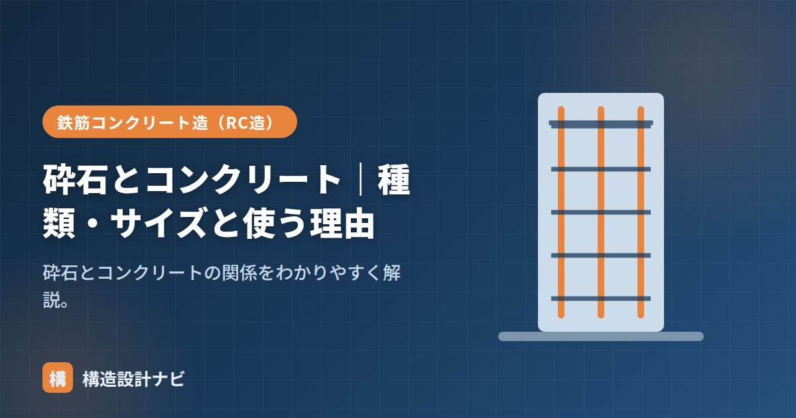

砕石とコンクリート｜種類・サイズと使う理由

砕石（さいせき）とは、岩石を機械で砕いてつくる粗骨材のことです。現在のコンクリートの粗骨材は、川砂利に代わって砕石が主流になっており、日本の生コンクリートの多くが砕石を粗骨材として使用しています。採石場で山や丘陵から切り出した岩石を、破砕機で段階的に小さくし、ふるい分けてサイズをそろえることでつくられます。
- 砕石は岩石を機械で砕いた粗骨材で、角張った形と良好な付着性が特徴。
- 川砂利の枯渇や供給の安定性から、現在は砕石が粗骨材の主流になっている。
- コンクリート用砕石はJIS A 5005に規定され、サイズは「呼び」で表される。
原料となる岩石の種類
コンクリート用の砕石には、硬質で安定した岩石が使われます。代表的なものに、安山岩・玄武岩などの火山岩、硬質砂岩・石灰岩などの堆積岩、花こう岩などの深成岩があります。産地によって使われる岩種は異なりますが、いずれも十分な強度と耐久性を持ち、有害な反応性鉱物を含まないことが求められます。同じ「砕石」でも、産出する岩石の性質によって形状や吸水率、コンクリートに与える影響が多少異なるため、使用実績のある岩種・産地の砕石を選ぶことが実務では重視されます。
砕石とは・川砂利との違い
| 砕石 | 川砂利 | |
|---|---|---|
| 形 | 角張っている | 丸みがある |
| 表面 | ざらざら | なめらか |
| 付着 | セメントペーストとよく付着 | 砕石より劣る |
| 施工性 | 角張りで流動性はやや低い | 流動性が良い |
コンクリート用砕石の種類・サイズ
コンクリート用の砕石はJIS A 5005に規定されます。サイズは「最大寸法と最小寸法」の組み合わせの呼び（例：2005＝20〜5mm、2505＝25〜5mm）で表されます。一般のコンクリートでは最大寸法20mmまたは25mmが使われます。
道路の路盤に使う「クラッシャラン」「粒度調整砕石（M-40など）」は粒度の範囲が異なり、コンクリート用とは別物です。コンクリートには規格に合ったコンクリート用砕石を使います。
砕石が使われる理由
- 良質な川砂利の枯渇：採取規制もあり入手しにくくなった。
- 供給が安定：岩石を砕いて安定して生産できる。
- 付着が良い：角張った表面がペーストとかみ合い、強度に有利。
一方、角張りのぶん同じスランプを得るのにやや多くの細骨材・水が必要になるため、配合で調整します。
品質管理での注意点
砕石を使う際には、次のような品質確認が行われます。
| 項目 | 内容 |
|---|---|
| アルカリシリカ反応性 | 骨材中の反応性鉱物がコンクリートの膨張・ひび割れを招かないか確認する。 |
| 微粒分量 | 砕石表面に付着した石粉（微粒分）が多すぎないか管理する。 |
| 粒形・粒度 | 細長い・偏平な粒が多いとワーカビリティや強度に不利なため、粒形や粒度分布を確認する。 |
アルカリシリカ反応を起こしやすい岩種の砕石を使うと、長期的にコンクリートの膨張ひび割れ（アルカリシリカ反応によるひび割れ）を引き起こすおそれがあります。産地・岩種ごとの試験結果を確認し、必要に応じて抑制対策（低アルカリ形セメントの使用など）を講じることが重要です。
砕石を使う物件で私が気にしているのは、産地・岩種が過去に使用実績のあるものかどうかです。アルカリシリカ反応の試験結果は提出されていても、産地が変わった途端に別物になっていることがあるため、変更の有無を毎回確認するようにしています。
砕石が主流になった理由
| 理由 | 内容 |
|---|---|
| 川砂利の枯渇 | 良質な川砂利は採り尽くされ、河川環境保護の観点から採取が規制された |
| 安定供給 | 採石場で計画的に生産でき、品質・粒度を管理しやすい |
| 付着性の高さ | 表面が粗く角張っているため、セメントペーストとの付着が良い |
| 品質の均一性 | 同じ岩体から採るため、性質のばらつきが小さい |
砕石は角張っているため、砂利に比べてワーカビリティが劣り、必要な単位水量が増える傾向があります。また、製造過程で微粒分（石粉）が付着しやすく、これが多いと単位水量がさらに増えます。実務では、粒形判定実積率という指標で粒の形の良否を評価し、細長い・偏平な粒が多すぎないことを確認します。良質な砕石は、丸みを帯びた砂利に近い性能を発揮します。
砕石のサイズ表記
| 表記 | 意味 | 用途 |
|---|---|---|
| 2005 | 20〜5mm（20mmを通り5mmにとどまる） | コンクリート用（最大寸法20mm） |
| 2505 | 25〜5mm | コンクリート用（最大寸法25mm） |
| C-40 | 粒度調整砕石（40mm以下、細かい粒も含む） | 路盤材・地業（コンクリート用ではない） |
| RC-40 | 再生クラッシャラン（コンクリート塊由来） | 路盤材・埋戻し |
コンクリート用の砕石は「2005」のように4桁で表記され、前2桁が最大寸法、後2桁が最小寸法を示します。一方、地業（砕石地業）に使う「C-40」などは粒度調整された砕石で、大小の粒が混ざって締め固まりやすくしたものです。用途がまったく異なるため、発注時に取り違えないよう注意が必要です。
よくある質問
Q1. 砕石と砂利ではコンクリートの強度が変わりますか？
同じ水セメント比なら、砕石を使ったほうがやや高い強度が得られる傾向があります。表面が粗く角張っているため、セメントペーストとの付着（機械的なかみ合わせ）が良いためです。ただしワーカビリティは劣るため、同じスランプを得るには単位水量が増え、その分強度が下がる要因にもなります。実際の強度は配合全体のバランスで決まります。
Q2. 砕石地業とコンクリート用の砕石は同じものですか？
別のものです。コンクリート用の砕石は粒径がそろっており（例：20〜5mm）、ペーストが行き渡るようになっています。一方、砕石地業に使うのは粒度調整砕石（C-40など）で、大小の粒が混ざっているため締め固めると密実になり、地盤としての支持力を発揮します。用途が逆になると、コンクリートは施工性が悪化し、地業は締まらないという問題が生じます。
Q3. 砕石の品質はどう確認しますか？
JIS A 5005（コンクリート用砕石及び砕砂）に基づき、絶乾密度・吸水率・粒度・微粒分量・すりへり減量・安定性などが規定されています。生コン工場は、使用する骨材について定期的に試験を行い、品質記録を保管しています。特に重要な工事では、この試験成績表を確認します。また、アルカリシリカ反応性についても判定が必要です。
まとめ
- 砕石は岩石を砕いた粗骨材。角張り、ペーストとの付着が良い。
- 安山岩・石灰岩・花こう岩など硬質な岩石が原料に使われる。
- コンクリート用砕石はJIS A 5005。サイズは呼び（2005・2505など）で表す。
- 川砂利の枯渇・供給安定・付着の良さから主流。アルカリシリカ反応性など品質管理も重要。